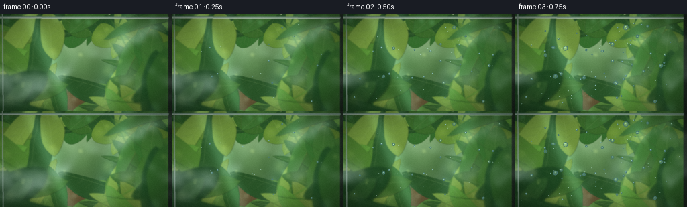
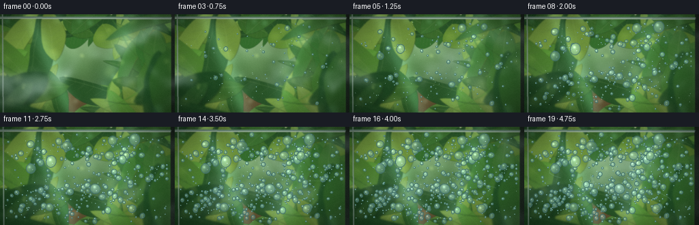
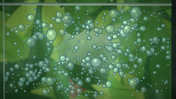
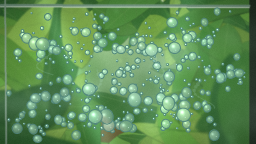
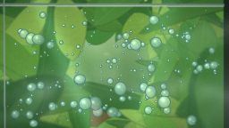
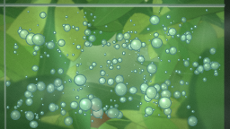
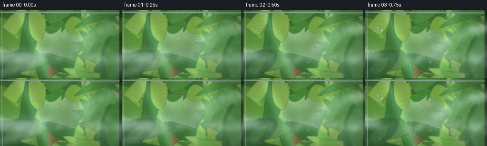
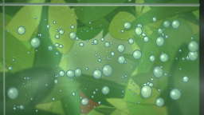
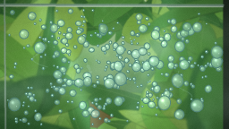

CODING AGENTS AS PIXEL WORLD MODELS
traex/DeepSeek-V4.1-Flash · phygen_105
点击播放 · 原生 RGB 像素
逐轮保存的候选
回放视频、检查图与代码变化。
每份候选均可单独播放。实际图片检查记录在下方工具轨迹中。
候选 01播放与检查图
点击播放 · 原生 RGB 像素

展开代码变化
--- 上一保存版本
+++ 本次保存版本
@@ -0,0 +1,601 @@
+from pathlib import Path
+import math
+
+import cv2
+import numpy as np
+
+import artifact_io
+
+
+CASE_DIR = Path(__file__).resolve().parent
+W, H, N, FPS = 256, 144, 20, 4.0
+S = 3
+RW, RH = W * S, H * S
+TAU = math.tau
+
+
+def smoothstep(x):
+ x = np.clip(x, 0.0, 1.0)
+ return x * x * (3.0 - 2.0 * x)
+
+
+def lerp(a, b, t):
+ return a + (b - a) * t
+
+
+def mix_color(a, b, t):
+ return np.asarray(a, np.float32) * (1.0 - t) + np.asarray(b, np.float32) * t
+
+
+def add_soft_ellipse(img, center, radii, color, opacity, angle=0.0, blur=0):
+ """Add a soft colored ellipse to a float image."""
+ overlay = img.copy()
+ cv2.ellipse(
+ overlay,
+ (int(center[0]), int(center[1])),
+ (max(1, int(radii[0])), max(1, int(radii[1]))),
+ angle,
+ 0,
+ 360,
+ tuple(float(v) for v in color),
+ -1,
+ cv2.LINE_AA,
+ )
+ if blur > 0:
+ overlay = cv2.GaussianBlur(overlay, (0, 0), blur)
+ mask = np.zeros((RH, RW), np.float32)
+ cv2.ellipse(
+ mask,
+ (int(center[0]), int(center[1])),
+ (max(1, int(radii[0])), max(1, int(radii[1]))),
+ angle,
+ 0,
+ 360,
+ 1.0,
+ -1,
+ cv2.LINE_AA,
+ )
+ if blur > 0:
+ mask = cv2.GaussianBlur(mask, (0, 0), blur)
+ return img * (1.0 - mask[..., None] * opacity) + np.asarray(color)[None, None, :] * mask[..., None] * opacity
+
+
+def leaf_polygon(cx, cy, length, width, angle, curve=0.15):
+ n = 18
+ u = np.linspace(-1.0, 1.0, n)
+ taper = np.maximum(0.0, 1.0 - u * u) ** 0.72
+ # A slight bend makes the otherwise elliptical leaves feel organic.
+ axis_x = u * length
+ axis_y = curve * length * (1.0 - u * u)
+ half = width * taper
+ left = np.column_stack((axis_x, axis_y - half))
+ right = np.column_stack((axis_x[::-1], axis_y[::-1] + half[::-1]))
+ pts = np.vstack((left, right))
+ c, s = math.cos(angle), math.sin(angle)
+ pts = np.column_stack((pts[:, 0] * c - pts[:, 1] * s + cx, pts[:, 0] * s + pts[:, 1] * c + cy))
+ return np.round(pts).astype(np.int32)
+
+
+def draw_leaf(img, rng, cx, cy, length, width, angle, palette, depth):
+ pts = leaf_polygon(cx, cy, length, width, angle, curve=rng.uniform(-0.22, 0.22))
+ shade = rng.uniform(0.86, 1.08)
+ base = np.clip(np.asarray(palette, np.float32) * shade, 0, 255)
+ shadow = mix_color(base, (8, 22, 12), 0.55)
+ shadow_pts = pts.copy()
+ shadow_pts[:, 0] += int(3 + 5 * depth)
+ shadow_pts[:, 1] += int(4 + 7 * depth)
+ layer = img.copy()
+ cv2.fillPoly(layer, [shadow_pts], tuple(float(v) for v in shadow), cv2.LINE_AA)
+ cv2.fillPoly(layer, [pts], tuple(float(v) for v in base), cv2.LINE_AA)
+ cv2.polylines(layer, [pts], True, tuple(float(v) for v in mix_color(base, (16, 44, 20), 0.48)), 1, cv2.LINE_AA)
+
+ # Central vein and a handful of side veins.
+ c, s = math.cos(angle), math.sin(angle)
+ a = np.array([-length, 0.0])
+ b = np.array([length, 0.0])
+ p0 = (int(cx + c * a[0] - s * a[1]), int(cy + s * a[0] + c * a[1]))
+ p1 = (int(cx + c * b[0] - s * b[1]), int(cy + s * b[0] + c * b[1]))
+ vein_col = tuple(float(v) for v in mix_color(base, (185, 210, 132), 0.38))
+ cv2.line(layer, p0, p1, vein_col, 1, cv2.LINE_AA)
+ for u in np.linspace(-0.75, 0.75, 7):
+ side = width * (1.0 - u * u) ** 0.72 * 0.78
+ start = np.array([u * length, 0.0])
+ for sign in (-1, 1):
+ end = np.array([u * length + length * 0.18, sign * side])
+ q0 = (int(cx + c * start[0] - s * start[1]), int(cy + s * start[0] + c * start[1]))
+ q1 = (int(cx + c * end[0] - s * end[1]), int(cy + s * end[0] + c * end[1]))
+ cv2.line(layer, q0, q1, tuple(float(v) for v in mix_color(vein_col, (22, 55, 22), 0.35)), 1, cv2.LINE_AA)
+ mask = np.zeros((RH, RW), np.float32)
+ cv2.fillPoly(mask, [pts], 1.0, cv2.LINE_AA)
+ blur = [0.8, 2.0, 4.4][depth]
+ if blur:
+ mask = cv2.GaussianBlur(mask, (0, 0), blur)
+ layer = cv2.GaussianBlur(layer, (0, 0), blur)
+ return img * (1.0 - mask[..., None]) + layer * mask[..., None]
+
+
+def draw_fern(img, rng, cx, cy, length, angle, palette, depth):
+ c, s = math.cos(angle), math.sin(angle)
+ stem_pts = []
+ for u in np.linspace(-1.0, 1.0, 28):
+ bend = 0.16 * length * (1.0 - u * u)
+ x = u * length
+ y = bend
+ stem_pts.append((int(cx + c * x - s * y), int(cy + s * x + c * y)))
+ layer = img.copy()
+ cv2.polylines(layer, [np.asarray(stem_pts, np.int32)], False, tuple(float(v) for v in mix_color(palette, (28, 65, 28), 0.35)), 2, cv2.LINE_AA)
+ for u in np.linspace(-0.83, 0.82, 14):
+ side = length * 0.30 * (1.0 - abs(u) ** 1.4) + 2
+ for sign in (-1, 1):
+ lx = u * length
+ ly = 0.16 * length * (1.0 - u * u)
+ tip = np.array([lx + sign * side * 0.78, ly + sign * side * 0.25])
+ q0 = (int(cx + c * lx - s * ly), int(cy + s * lx + c * ly))
+ q1 = (int(cx + c * tip[0] - s * tip[1]), int(cy + s * tip[0] + c * tip[1]))
+ col = tuple(float(v) for v in np.clip(np.asarray(palette) * rng.uniform(0.82, 1.06), 0, 255))
+ cv2.line(layer, q0, q1, col, max(2, int(4 - depth)), cv2.LINE_AA)
+ mask = np.zeros((RH, RW), np.float32)
+ cv2.polylines(mask, [np.asarray(stem_pts, np.int32)], False, 1.0, max(3, int(7 - depth * 2)), cv2.LINE_AA)
+ blur = [1.0, 2.4, 5.0][depth]
+ mask = cv2.GaussianBlur(mask, (0, 0), blur)
+ layer = cv2.GaussianBlur(layer, (0, 0), blur)
+ return img * (1.0 - mask[..., None] * 0.8) + layer * mask[..., None] * 0.8
+
+
+def make_background():
+ rng = np.random.default_rng(105)
+ yy, xx = np.mgrid[0:RH, 0:RW].astype(np.float32)
+ yn = yy / (RH - 1)
+ xn = xx / (RW - 1)
+
+ top = np.array([198, 218, 178], np.float32)
+ mid = np.array([105, 145, 93], np.float32)
+ bottom = np.array([24, 53, 31], np.float32)
+ grad = np.empty((RH, RW, 3), np.float32)
+ for ch in range(3):
+ grad[..., ch] = np.where(yn < 0.55, top[ch] + (mid[ch] - top[ch]) * (yn / 0.55), mid[ch] + (bottom[ch] - mid[ch]) * ((yn - 0.55) / 0.45))
+
+ # Warm, diffuse greenhouse daylight.
+ glow = np.exp(-(((xn - 0.77) / 0.26) ** 2 + ((yn - 0.08) / 0.22) ** 2) * 2.0)
+ grad += glow[..., None] * np.array([52, 42, 12], np.float32)
+ broad = np.exp(-(((xn - 0.23) / 0.32) ** 2 + ((yn - 0.44) / 0.28) ** 2) * 1.6)
+ grad += broad[..., None] * np.array([13, 26, 9], np.float32)
+
+ # Blurred color masses give the interior depth before leaves are added.
+ for _ in range(26):
+ cx = rng.uniform(-0.08, 1.08) * RW
+ cy = rng.uniform(0.2, 1.08) * RH
+ rx = rng.uniform(30, 145)
+ ry = rng.uniform(18, 90)
+ color = mix_color((25, 67, 30), (120, 155, 75), rng.uniform(0.05, 0.7))
+ grad = add_soft_ellipse(grad, (cx, cy), (rx, ry), color, rng.uniform(0.12, 0.38), rng.uniform(0, 180), blur=rng.uniform(10, 28))
+
+ # Pale glass panes and distant greenhouse structure.
+ cv2.line(grad, (int(0.02 * RW), int(0.10 * RH)), (int(0.95 * RW), int(0.10 * RH)), (65, 79, 55), 4, cv2.LINE_AA)
+ cv2.line(grad, (int(0.93 * RW), int(0.04 * RH)), (int(0.97 * RW), int(0.98 * RH)), (48, 63, 46), 9, cv2.LINE_AA)
+ cv2.line(grad, (int(0.02 * RW), int(0.10 * RH)), (int(0.03 * RW), int(0.99 * RH)), (55, 70, 49), 6, cv2.LINE_AA)
+ cv2.line(grad, (int(0.78 * RW), int(0.08 * RH)), (int(0.91 * RW), int(0.93 * RH)), (44, 59, 43), 5, cv2.LINE_AA)
+
+ # Distant potted plants, mostly reduced to shapes by the plastic.
+ for x, y, rw, rh, col in [
+ (0.14, 0.86, 0.085, 0.17, (106, 70, 45)),
+ (0.45, 0.92, 0.10, 0.15, (132, 83, 49)),
+ (0.75, 0.90, 0.075, 0.13, (96, 63, 41)),
+ ]:
+ grad = add_soft_ellipse(grad, (x * RW, y * RH), (rw * RW, rh * RH), col, 0.62, blur=9)
+
+ palettes = [
+ [(42, 86, 38), (61, 111, 46), (87, 132, 55)],
+ [(52, 106, 42), (88, 142, 51), (123, 159, 63)],
+ [(33, 79, 35), (63, 113, 43), (98, 138, 48)],
+ ]
+
+ # Far foliage, softened by the plastic and shallow depth of field.
+ for _ in range(110):
+ side = rng.choice(["left", "right", "top", "bottom"], p=[0.26, 0.27, 0.18, 0.29])
+ if side == "left":
+ cx, cy = rng.uniform(-0.10, 0.35) * RW, rng.uniform(0.03, 1.02) * RH
+ elif side == "right":
+ cx, cy = rng.uniform(0.68, 1.12) * RW, rng.uniform(0.03, 1.02) * RH
+ elif side == "top":
+ cx, cy = rng.uniform(0.0, 1.0) * RW, rng.uniform(-0.05, 0.24) * RH
+ else:
+ cx, cy = rng.uniform(0.0, 1.0) * RW, rng.uniform(0.73, 1.12) * RH
+ pal = palettes[rng.integers(0, len(palettes))]
+ grad = draw_leaf(
+ grad,
+ rng,
+ cx,
+ cy,
+ rng.uniform(18, 58) * S,
+ rng.uniform(5, 20) * S,
+ rng.uniform(-math.pi, math.pi),
+ pal[rng.integers(0, len(pal))],
+ 0,
+ )
+
+ # Midground plants frame a relatively quiet central patch.
+ for _ in range(34):
+ cx = rng.choice([rng.uniform(-0.02, 0.30), rng.uniform(0.70, 1.02)]) * RW
+ cy = rng.uniform(0.05, 1.04) * RH
+ pal = palettes[rng.integers(0, len(palettes))]
+ grad = draw_leaf(
+ grad,
+ rng,
+ cx,
+ cy,
+ rng.uniform(25, 70) * S,
+ rng.uniform(8, 23) * S,
+ rng.uniform(-math.pi, math.pi),
+ pal[rng.integers(0, len(pal))],
+ 1,
+ )
+
+ for _ in range(9):
+ cx = rng.choice([rng.uniform(-0.06, 0.24), rng.uniform(0.76, 1.08)]) * RW
+ cy = rng.uniform(0.18, 1.02) * RH
+ pal = palettes[rng.integers(0, len(palettes))]
+ grad = draw_fern(grad, rng, cx, cy, rng.uniform(45, 92) * S, rng.uniform(-1.2, 1.2), pal[1], 1)
+
+ # Near foreground leaves at the corners add separation from the sheet.
+ for _ in range(9):
+ if rng.random() < 0.5:
+ cx = rng.uniform(-0.04, 0.18) * RW
+ else:
+ cx = rng.uniform(0.84, 1.05) * RW
+ cy = rng.uniform(0.62, 1.05) * RH
+ pal = palettes[rng.integers(0, len(palettes))]
+ grad = draw_leaf(
+ grad,
+ rng,
+ cx,
+ cy,
+ rng.uniform(35, 82) * S,
+ rng.uniform(10, 26) * S,
+ rng.uniform(-math.pi, math.pi),
+ pal[0],
+ 2,
+ )
+
+ # Sparse warm bokeh and cool greenhouse glints.
+ for _ in range(45):
+ x, y = rng.uniform(0, RW), rng.uniform(0, RH)
+ r = rng.uniform(2.0, 9.0) * S
+ warm = rng.random() < 0.68
+ col = (220, 199, 112) if warm else (151, 204, 195)
+ glow_layer = np.zeros_like(grad)
+ cv2.circle(glow_layer, (int(x), int(y)), int(r), col, -1, cv2.LINE_AA)
+ glow_layer = cv2.GaussianBlur(glow_layer, (0, 0), r * 0.45)
+ grad += glow_layer * rng.uniform(0.04, 0.15)
+
+ # A light plastic sheet warps the greenhouse only slightly.
+ xgrid, ygrid = np.meshgrid(np.arange(RW, dtype=np.float32), np.arange(RH, dtype=np.float32))
+ dx = 2.2 * np.sin(yn * 21.0 + 0.6) + 1.1 * np.sin(xn * 17.0 - 0.4)
+ dy = 1.8 * np.sin(xn * 14.0 + 1.1) + 0.8 * np.cos(yn * 26.0)
+ warped = cv2.remap(grad, xgrid + dx, ygrid + dy, cv2.INTER_CUBIC, borderMode=cv2.BORDER_REFLECT)
+
+ # Cool, transparent film and long soft reflections.
+ warped = warped * 0.94 + np.array([31, 52, 44], np.float32) * 0.06
+ reflection = np.exp(-((xn - (0.17 + 0.24 * yn)) / 0.045) ** 2) * (0.20 + 0.10 * yn)
+ warped += reflection[..., None] * np.array([115, 157, 139], np.float32)
+ reflection2 = np.exp(-((xn - (0.73 - 0.14 * yn)) / 0.06) ** 2) * (0.12 + 0.08 * (1.0 - yn))
+ warped += reflection2[..., None] * np.array([95, 147, 133], np.float32)
+
+ # Frame edge and folded plastic lip.
+ cv2.rectangle(warped, (int(0.974 * RW), 0), (RW, RH), (30, 41, 32), -1)
+ cv2.line(warped, (0, int(0.035 * RH)), (int(0.974 * RW), int(0.040 * RH)), (118, 148, 128), 5, cv2.LINE_AA)
+ cv2.line(warped, (0, int(0.047 * RH)), (int(0.974 * RW), int(0.052 * RH)), (214, 226, 205), 2, cv2.LINE_AA)
+ cv2.line(warped, (int(0.020 * RW), 0), (int(0.024 * RW), RH), (139, 163, 144), 3, cv2.LINE_AA)
+
+ # Slight vignette and a soft highlight bloom.
+ vignette = 1.0 - 0.32 * smoothstep((np.sqrt((xn - 0.5) ** 2 + (yn - 0.5) ** 2) - 0.28) / 0.55)
+ warped *= vignette[..., None]
+ bright = np.maximum(warped - 176.0, 0.0)
+ warped += cv2.GaussianBlur(bright, (0, 0), 9 * S) * 0.20
+ return np.clip(warped, 0, 255).astype(np.float32)
+
+
+def value_noise(rng, small_w, small_h):
+ grid = rng.random((small_h, small_w), dtype=np.float32)
+ return cv2.resize(grid, (W, H), interpolation=cv2.INTER_CUBIC)
+
+
+def make_noise_keys():
+ rng = np.random.default_rng(441)
+ keys = []
+ for _ in range(7):
+ n = (
+ 0.48 * value_noise(rng, 6, 4)
+ + 0.28 * value_noise(rng, 13, 8)
+ + 0.16 * value_noise(rng, 27, 16)
+ + 0.08 * value_noise(rng, 53, 30)
+ )
+ n = (n - n.min()) / (n.max() - n.min() + 1e-6)
+ keys.append(n.astype(np.float32))
+ return keys
+
+
+def smooth_noise_at(keys, t):
+ pos = t * (len(keys) - 1)
+ i = min(int(pos), len(keys) - 2)
+ f = smoothstep(pos - i)
+ return keys[i] * (1.0 - f) + keys[i + 1] * f
+
+
+def make_mist_layer(keys, t):
+ """Moving humid plume entering from the lower right."""
+ yy, xx = np.mgrid[0:H, 0:W].astype(np.float32)
+ xn = xx / (W - 1)
+ yn = yy / (H - 1)
+ n = smooth_noise_at(keys, t)
+
+ # Three curved streamers, strongest while the vapor first meets the sheet.
+ path1 = 0.58 + 0.20 * np.sin((xn + 0.10 * t) * 4.4 + 0.5) - 0.22 * xn
+ path2 = 0.80 + 0.10 * np.sin((xn - 0.15 * t) * 6.2 + 1.6) - 0.11 * xn
+ d1 = np.exp(-((yn - path1) / (0.10 + 0.05 * (1.0 - xn))) ** 2)
+ d2 = np.exp(-((yn - path2) / 0.065) ** 2)
+ source = np.exp(-(((xn - 0.91 - 0.04 * t) / 0.30) ** 2 + ((yn - 0.76) / 0.34) ** 2))
+ shape = np.clip(0.72 * d1 + 0.35 * d2 + 0.55 * source, 0.0, 1.2)
+ wisp = smoothstep((n - 0.42) / 0.34) * shape
+ wisp += 0.20 * smoothstep((n - 0.62) / 0.22) * d1
+ early = 0.50 + 0.50 * math.exp(-((t - 0.07) / 0.25) ** 2)
+ fade = 0.68 + 0.32 * math.cos(t * 1.7)
+ wisp = np.clip(wisp * early * fade, 0, 1)
+ return wisp
+
+
+def make_dew_haze(keys, t):
+ n = smooth_noise_at(keys, (t * 0.82 + 0.12) % 1.0)
+ yy, xx = np.mgrid[0:H, 0:W].astype(np.float32)
+ xn = xx / (W - 1)
+ yn = yy / (H - 1)
+ patch = smoothstep((n - 0.45) / 0.34)
+ cool_zone = smoothstep((0.86 - np.sqrt(((xn - 0.54) / 0.55) ** 2 + ((yn - 0.55) / 0.50) ** 2)) / 0.28)
+ return patch * cool_zone * (0.20 + 0.80 * smoothstep((t - 0.08) / 0.72))
+
+
+def build_droplets():
+ rng = np.random.default_rng(905)
+ centers = np.array(
+ [
+ [0.24, 0.34], [0.40, 0.20], [0.57, 0.31], [0.72, 0.20],
+ [0.30, 0.65], [0.53, 0.62], [0.72, 0.72], [0.87, 0.48],
+ [0.16, 0.80], [0.45, 0.84], [0.66, 0.49],
+ ],
+ np.float32,
+ )
+ drops = []
+ total = 620
+ for i in range(total):
+ if rng.random() < 0.74:
+ c = centers[rng.integers(0, len(centers))]
+ x = np.clip(rng.normal(c[0], rng.uniform(0.035, 0.115)), 0.035, 0.955)
+ y = np.clip(rng.normal(c[1], rng.uniform(0.035, 0.105)), 0.08, 0.965)
+ else:
+ x, y = rng.uniform(0.04, 0.95), rng.uniform(0.08, 0.95)
+ u = rng.random()
+ if i < 16:
+ rf = rng.uniform(4.5, 8.0)
+ else:
+ rf = 0.55 + 4.1 * (u ** 3.0)
+ birth = np.clip(rng.beta(1.55, 1.55) * 0.84 + rng.uniform(-0.08, 0.08), 0.02, 0.89)
+ if i < 60:
+ birth = min(birth, rng.uniform(0.03, 0.36))
+ drops.append(
+ {
+ "x": x * W * S,
+ "y": y * H * S,
+ "r": rf * S,
+ "birth": float(birth),
+ "aspect": rng.uniform(0.82, 1.22),
+ "angle": rng.uniform(-28, 28),
+ "phase": rng.uniform(0, TAU),
+ "bright": rng.uniform(0.88, 1.15),
+ }
+ )
+ return drops
+
+
+def alpha_blend_roi(base, x0, y0, patch, alpha):
+ x0 = max(0, x0)
+ y0 = max(0, y0)
+ x1 = min(RW, x0 + patch.shape[1])
+ y1 = min(RH, y0 + patch.shape[0])
+ if x1 <= x0 or y1 <= y0:
+ return
+ ph, pw = y1 - y0, x1 - x0
+ a = alpha[:ph, :pw, None]
+ p = patch[:ph, :pw]
+ base[y0:y1, x0:x1] = base[y0:y1, x0:x1] * (1.0 - a) + p * a
+
+
+def draw_droplets(frame, drops, t):
+ # Sort small to large so neighboring beads merge naturally.
+ active = []
+ for d in drops:
+ if t <= d["birth"]:
+ continue
+ q = smoothstep((t - d["birth"]) / 0.30)
+ radius = d["r"] * (0.18 + 0.82 * q ** 0.68)
+ active.append((radius, d, q))
+ active.sort(key=lambda item: item[0])
+
+ base_soft = cv2.GaussianBlur(frame, (0, 0), 2.0 * S)
+ for radius, d, q in active:
+ rx = radius
+ ry = radius * d["aspect"]
+ x, y = d["x"], d["y"]
+ # Keep droplets out of the plastic lip and the frame edge.
+ if y < 0.075 * RH or x > 0.955 * RW:
+ continue
+ if radius < 1.25:
+ col = np.array([185, 219, 208], np.float32) * d["bright"]
+ cv2.circle(frame, (int(x), int(y)), max(1, int(radius)), tuple(float(v) for v in col), -1, cv2.LINE_AA)
+ continue
+
+ pad = int(radius * 1.7 + 3)
+ x0, y0 = int(x) - pad, int(y) - pad
+ x1, y1 = int(x) + pad + 1, int(y) + pad + 1
+ lx, ly = x - x0, y - y0
+ hh, ww = y1 - y0, x1 - x0
+ if hh <= 0 or ww <= 0:
+ continue
+ gx, gy = np.meshgrid(np.arange(ww, dtype=np.float32), np.arange(hh, dtype=np.float32))
+ ca, sa = math.cos(math.radians(d["angle"])), math.sin(math.radians(d["angle"]))
+ u = (gx - lx) * ca + (gy - ly) * sa
+ v = -(gx - lx) * sa + (gy - ly) * ca
+ rho = np.sqrt((u / max(rx, 0.1)) ** 2 + (v / max(ry, 0.1)) ** 2)
+ mask = 1.0 - smoothstep((rho - 0.82) / 0.18)
+ if mask.max() < 0.01:
+ continue
+
+ # Refraction-like interior: sample nearby background and cool it.
+ sample_x = int(np.clip(x + 0.20 * radius, 0, RW - 1))
+ sample_y = int(np.clip(y + 0.26 * radius, 0, RH - 1))
+ sx0, sy0 = sample_x - pad, sample_y - pad
+ sx1, sy1 = sample_x + pad + 1, sample_y + pad + 1
+ if sx0 >= 0 and sy0 >= 0 and sx1 <= RW and sy1 <= RH:
+ refr = base_soft[sy0:sy1, sx0:sx1]
+ else:
+ refr = base_soft[y0:y1, x0:x1]
+ if refr.shape[:2] != (hh, ww):
+ refr = cv2.resize(refr, (ww, hh), interpolation=cv2.INTER_LINEAR)
+
+ radial = np.clip(1.0 - rho * 0.72, 0.0, 1.0)
+ tint = np.array([163, 213, 203], np.float32)
+ interior = refr * 0.58 + tint[None, None, :] * (0.42 * d["bright"])
+ interior += (radial[..., None] - 0.45) * np.array([34, 34, 28], np.float32)
+ # Dark lower-right meniscus and a translucent top-left highlight.
+ angle_grad = (u * 0.7 + v * 0.7) / max(rx, ry, 1.0)
+ interior += np.clip(angle_grad[..., None], -1, 1) * np.array([-18, -17, -15], np.float32)
+ alpha = mask * (0.56 + 0.34 * q)
+ alpha_blend_roi(frame, x0, y0, interior, alpha)
+
+ # Crisp rim, then specular pinpoints.
+ cv2.ellipse(
+ frame,
+ (int(x), int(y)),
+ (max(1, int(rx)), max(1, int(ry))),
+ d["angle"],
+ 0,
+ 360,
+ (72, 117, 110),
+ max(1, int(0.7 * S)),
+ cv2.LINE_AA,
+ )
+ hx = int(x - 0.28 * rx * ca + 0.26 * ry * sa)
+ hy = int(y - 0.28 * rx * sa - 0.26 * ry * ca)
+ hr = max(1, int(radius * 0.19))
+ spec_layer = np.zeros_like(frame)
+ cv2.circle(spec_layer, (hx, hy), hr, (246, 252, 239), -1, cv2.LINE_AA)
+ spec_layer = cv2.GaussianBlur(spec_layer, (0, 0), max(0.7, radius * 0.16))
+ frame += spec_layer * (0.58 + 0.20 * q)
+ if radius > 3.0 * S:
+ bx = int(x + 0.34 * rx * ca - 0.28 * ry * sa)
+ by = int(y + 0.34 * rx * sa + 0.28 * ry * ca)
+ cv2.circle(frame, (bx, by), max(1, int(radius * 0.09)), (211, 239, 225), -1, cv2.LINE_AA)
+ return frame
+
+
+def draw_runnels(frame, t):
+ if t < 0.48:
+ return frame
+ specs = [
+ (0.19, 0.32, 0.55, 0.07),
+ (0.38, 0.48, 0.61, -0.04),
+ (0.61, 0.37, 0.66, 0.05),
+ (0.78, 0.55, 0.73, -0.06),
+ ]
+ overlay = frame.copy()
+ for x0, y0, birth, wobble in specs:
+ p = smoothstep((t - birth) / (1.0 - birth + 1e-5))
+ if p <= 0:
+ continue
+ start_x = x0 * RW
+ start_y = y0 * RH
+ length = p * RH * 0.20
+ pts = []
+ for k in np.linspace(0, 1, 24):
+ yy = start_y + k * length
+ xx = start_x + wobble * RW * math.sin(k * 5.0 + x0 * 8.0) * k
+ pts.append((int(xx), int(yy)))
+ pts = np.asarray(pts, np.int32)
+ cv2.polylines(overlay, [pts], False, (159, 209, 199), max(1, int(0.9 * S)), cv2.LINE_AA)
+ for k in np.linspace(0.18, 1.0, 8):
+ idx = min(len(pts) - 1, int(k * (len(pts) - 1)))
+ px, py = pts[idx]
+ rr = max(1, int((0.7 + 1.8 * (1.0 - k)) * S))
+ cv2.circle(overlay, (int(px), int(py)), rr, (183, 222, 210), -1, cv2.LINE_AA)
+ # The overlay itself contains only the thin runnels; use a modest blend.
+ cv2.addWeighted(overlay, 0.18 * smoothstep((t - 0.48) / 0.52), frame, 1.0 - 0.18 * smoothstep((t - 0.48) / 0.52), 0, frame)
+ return frame
+
+
+def apply_atmosphere(frame, mist, dew, t):
+ # Mist is cool and luminous; dew haze is a thin milky film on the plastic.
+ mist_col = np.array([211, 235, 225], np.float32)
+ frame = frame * (1.0 - 0.42 * mist[..., None]) + mist_col[None, None, :] * (0.42 * mist[..., None])
+ dew_alpha = 0.18 * dew * (0.25 + 0.75 * t)
+ frame = frame * (1.0 - dew_alpha[..., None]) + np.array([191, 218, 207], np.float32)[None, None, :] * dew_alpha[..., None]
+ return frame
+
+
+def postprocess(frame, t, rng):
+ yy, xx = np.mgrid[0:H, 0:W].astype(np.float32)
+ xn, yn = xx / (W - 1), yy / (H - 1)
+ vignette = 1.0 - 0.24 * smoothstep((np.sqrt((xn - 0.5) ** 2 + (yn - 0.5) ** 2) - 0.28) / 0.58)
+ frame *= vignette[..., None]
+
+ # Gentle cool grade develops as the condensation accumulates.
+ frame = frame * np.array([0.985 - 0.012 * t, 1.002, 1.012 + 0.008 * t], np.float32)
+ # Small bloom keeps the wet highlights luminous.
+ hi = np.maximum(frame - 195.0, 0.0)
+ frame += cv2.GaussianBlur(hi, (0, 0), 3.2) * 0.24
+ # Fine photographic grain, varied only slightly to avoid temporal chatter.
+ grain = rng.normal(0.0, 1.25, (H, W, 1)).astype(np.float32)
+ frame += grain
+ return np.clip(frame, 0, 255).astype(np.uint8)
+
+
+def main():
+ rng = np.random.default_rng(1052026)
+ bg = make_background()
+ noise_keys = make_noise_keys()
+ droplets = build_droplets()
+ frames = []
+
+ for i in range(N):
+ t = i / (N - 1)
+ # Slight, smooth camera push makes the five seconds feel like an observed timelapse.
+ zoom = 1.012 - 0.012 * smoothstep(t)
+ m = np.array([[zoom, 0, (1 - zoom) * RW * 0.50], [0, zoom, (1 - zoom) * RH * 0.54]], np.float32)
+ frame = cv2.warpAffine(bg, m, (RW, RH), flags=cv2.INTER_CUBIC, borderMode=cv2.BORDER_REFLECT)
+
+ # The plastic stays sharp while the interior is a touch softer.
+ frame = cv2.GaussianBlur(frame, (0, 0), 0.42 * S)
+ mist = make_mist_layer(noise_keys, t)
+ mist_big = cv2.resize(mist, (RW, RH), interpolation=cv2.INTER_CUBIC)
+ mist_big = cv2.GaussianBlur(mist_big, (0, 0), 3.0 * S)
+ dew = make_dew_haze(noise_keys, t)
+ dew_big = cv2.resize(dew, (RW, RH), interpolation=cv2.INTER_CUBIC)
+ dew_big = cv2.GaussianBlur(dew_big, (0, 0), 1.6 * S)
+ frame = apply_atmosphere(frame, mist_big, dew_big, t)
+ frame = draw_droplets(frame, droplets, t)
+ frame = draw_runnels(frame, t)
+ frame = cv2.resize(frame, (W, H), interpolation=cv2.INTER_AREA)
+ frame = postprocess(frame, t, rng)
+ frames.append(frame)
+
+ frames = np.stack(frames, axis=0)
+ artifact_io.save(frames, CASE_DIR)
+
+ # Also provide a directly playable MP4 in addition to the required artifacts.
+ writer = cv2.VideoWriter(str(CASE_DIR / "video.mp4"), cv2.VideoWriter_fourcc(*"mp4v"), FPS, (W, H))
+ for frame in frames:
+ writer.write(cv2.cvtColor(frame, cv2.COLOR_RGB2BGR))
+ writer.release()
+ print(f"wrote {len(frames)} frames to {CASE_DIR}")
+
+
+if __name__ == "__main__":
+ main()
候选 02播放与检查图
点击播放 · 原生 RGB 像素

展开代码变化
--- 上一保存版本
+++ 本次保存版本
@@ -148,9 +148,9 @@
yn = yy / (RH - 1)
xn = xx / (RW - 1)
- top = np.array([198, 218, 178], np.float32)
- mid = np.array([105, 145, 93], np.float32)
- bottom = np.array([24, 53, 31], np.float32)
+ top = np.array([208, 226, 188], np.float32)
+ mid = np.array([116, 156, 100], np.float32)
+ bottom = np.array([38, 77, 43], np.float32)
grad = np.empty((RH, RW, 3), np.float32)
for ch in range(3):
grad[..., ch] = np.where(yn < 0.55, top[ch] + (mid[ch] - top[ch]) * (yn / 0.55), mid[ch] + (bottom[ch] - mid[ch]) * ((yn - 0.55) / 0.45))
@@ -167,7 +167,7 @@
cy = rng.uniform(0.2, 1.08) * RH
rx = rng.uniform(30, 145)
ry = rng.uniform(18, 90)
- color = mix_color((25, 67, 30), (120, 155, 75), rng.uniform(0.05, 0.7))
+ color = mix_color((36, 83, 38), (132, 168, 83), rng.uniform(0.05, 0.7))
grad = add_soft_ellipse(grad, (cx, cy), (rx, ry), color, rng.uniform(0.12, 0.38), rng.uniform(0, 180), blur=rng.uniform(10, 28))
# Pale glass panes and distant greenhouse structure.
@@ -185,9 +185,9 @@
grad = add_soft_ellipse(grad, (x * RW, y * RH), (rw * RW, rh * RH), col, 0.62, blur=9)
palettes = [
- [(42, 86, 38), (61, 111, 46), (87, 132, 55)],
- [(52, 106, 42), (88, 142, 51), (123, 159, 63)],
- [(33, 79, 35), (63, 113, 43), (98, 138, 48)],
+ [(54, 106, 47), (75, 131, 56), (104, 153, 66)],
+ [(64, 126, 52), (101, 160, 61), (137, 178, 76)],
+ [(44, 96, 44), (76, 132, 53), (115, 158, 61)],
]
# Far foliage, softened by the plastic and shallow depth of field.
@@ -258,15 +258,15 @@
)
# Sparse warm bokeh and cool greenhouse glints.
- for _ in range(45):
+ for _ in range(34):
x, y = rng.uniform(0, RW), rng.uniform(0, RH)
- r = rng.uniform(2.0, 9.0) * S
+ r = rng.uniform(1.6, 5.8) * S
warm = rng.random() < 0.68
col = (220, 199, 112) if warm else (151, 204, 195)
glow_layer = np.zeros_like(grad)
cv2.circle(glow_layer, (int(x), int(y)), int(r), col, -1, cv2.LINE_AA)
glow_layer = cv2.GaussianBlur(glow_layer, (0, 0), r * 0.45)
- grad += glow_layer * rng.uniform(0.04, 0.15)
+ grad += glow_layer * rng.uniform(0.025, 0.085)
# A light plastic sheet warps the greenhouse only slightly.
xgrid, ygrid = np.meshgrid(np.arange(RW, dtype=np.float32), np.arange(RH, dtype=np.float32))
@@ -288,7 +288,7 @@
cv2.line(warped, (int(0.020 * RW), 0), (int(0.024 * RW), RH), (139, 163, 144), 3, cv2.LINE_AA)
# Slight vignette and a soft highlight bloom.
- vignette = 1.0 - 0.32 * smoothstep((np.sqrt((xn - 0.5) ** 2 + (yn - 0.5) ** 2) - 0.28) / 0.55)
+ vignette = 1.0 - 0.24 * smoothstep((np.sqrt((xn - 0.5) ** 2 + (yn - 0.5) ** 2) - 0.30) / 0.58)
warped *= vignette[..., None]
bright = np.maximum(warped - 176.0, 0.0)
warped += cv2.GaussianBlur(bright, (0, 0), 9 * S) * 0.20
@@ -329,17 +329,18 @@
yn = yy / (H - 1)
n = smooth_noise_at(keys, t)
- # Three curved streamers, strongest while the vapor first meets the sheet.
- path1 = 0.58 + 0.20 * np.sin((xn + 0.10 * t) * 4.4 + 0.5) - 0.22 * xn
- path2 = 0.80 + 0.10 * np.sin((xn - 0.15 * t) * 6.2 + 1.6) - 0.11 * xn
- d1 = np.exp(-((yn - path1) / (0.10 + 0.05 * (1.0 - xn))) ** 2)
+ # Two broad curved vapor ribbons enter low from the right, then thin out.
+ path1 = 0.63 + 0.15 * np.sin((xn + 0.13 * t) * 4.0 + 0.3) - 0.26 * xn
+ path2 = 0.86 + 0.08 * np.sin((xn - 0.17 * t) * 5.4 + 1.7) - 0.15 * xn
+ d1 = np.exp(-((yn - path1) / (0.095 + 0.035 * (1.0 - xn))) ** 2)
d2 = np.exp(-((yn - path2) / 0.065) ** 2)
- source = np.exp(-(((xn - 0.91 - 0.04 * t) / 0.30) ** 2 + ((yn - 0.76) / 0.34) ** 2))
- shape = np.clip(0.72 * d1 + 0.35 * d2 + 0.55 * source, 0.0, 1.2)
- wisp = smoothstep((n - 0.42) / 0.34) * shape
- wisp += 0.20 * smoothstep((n - 0.62) / 0.22) * d1
- early = 0.50 + 0.50 * math.exp(-((t - 0.07) / 0.25) ** 2)
- fade = 0.68 + 0.32 * math.cos(t * 1.7)
+ source = np.exp(-(((xn - 0.94 - 0.035 * t) / 0.27) ** 2 + ((yn - 0.79) / 0.30) ** 2))
+ wisps = smoothstep((n - 0.30) / 0.40)
+ shape = np.clip(0.90 * d1 + 0.48 * d2 + 0.72 * source, 0.0, 1.2)
+ wisp = (0.35 + 0.65 * wisps) * shape
+ wisp += 0.23 * smoothstep((n - 0.55) / 0.28) * d1
+ early = 0.50 + 0.50 * math.exp(-((t - 0.10) / 0.33) ** 2)
+ fade = 0.66 + 0.34 * math.cos(t * 1.5)
wisp = np.clip(wisp * early * fade, 0, 1)
return wisp
@@ -355,40 +356,42 @@
def build_droplets():
- rng = np.random.default_rng(905)
+ rng = np.random.default_rng(1905)
centers = np.array(
[
- [0.24, 0.34], [0.40, 0.20], [0.57, 0.31], [0.72, 0.20],
- [0.30, 0.65], [0.53, 0.62], [0.72, 0.72], [0.87, 0.48],
- [0.16, 0.80], [0.45, 0.84], [0.66, 0.49],
+ [0.20, 0.34], [0.38, 0.23], [0.55, 0.36], [0.74, 0.24],
+ [0.28, 0.66], [0.49, 0.59], [0.69, 0.75], [0.86, 0.51],
+ [0.14, 0.82], [0.41, 0.85], [0.64, 0.49],
],
np.float32,
)
drops = []
- total = 620
+ total = 390
for i in range(total):
- if rng.random() < 0.74:
+ if rng.random() < 0.80:
c = centers[rng.integers(0, len(centers))]
- x = np.clip(rng.normal(c[0], rng.uniform(0.035, 0.115)), 0.035, 0.955)
- y = np.clip(rng.normal(c[1], rng.uniform(0.035, 0.105)), 0.08, 0.965)
+ x = np.clip(rng.normal(c[0], rng.uniform(0.035, 0.105)), 0.035, 0.955)
+ y = np.clip(rng.normal(c[1], rng.uniform(0.035, 0.095)), 0.08, 0.965)
else:
x, y = rng.uniform(0.04, 0.95), rng.uniform(0.08, 0.95)
u = rng.random()
- if i < 16:
- rf = rng.uniform(4.5, 8.0)
+ if i < 20:
+ rf = rng.uniform(4.8, 7.4)
else:
- rf = 0.55 + 4.1 * (u ** 3.0)
+ rf = 0.95 + 4.0 * (u ** 2.4)
birth = np.clip(rng.beta(1.55, 1.55) * 0.84 + rng.uniform(-0.08, 0.08), 0.02, 0.89)
- if i < 60:
+ if i < 45:
birth = min(birth, rng.uniform(0.03, 0.36))
+ elif i > 260:
+ birth = max(birth, rng.uniform(0.42, 0.82))
drops.append(
{
"x": x * W * S,
"y": y * H * S,
"r": rf * S,
"birth": float(birth),
- "aspect": rng.uniform(0.82, 1.22),
- "angle": rng.uniform(-28, 28),
+ "aspect": rng.uniform(0.86, 1.18),
+ "angle": rng.uniform(-22, 22),
"phase": rng.uniform(0, TAU),
"bright": rng.uniform(0.88, 1.15),
}
@@ -428,7 +431,7 @@
# Keep droplets out of the plastic lip and the frame edge.
if y < 0.075 * RH or x > 0.955 * RW:
continue
- if radius < 1.25:
+ if radius < 1.75:
col = np.array([185, 219, 208], np.float32) * d["bright"]
cv2.circle(frame, (int(x), int(y)), max(1, int(radius)), tuple(float(v) for v in col), -1, cv2.LINE_AA)
continue
@@ -462,13 +465,13 @@
refr = cv2.resize(refr, (ww, hh), interpolation=cv2.INTER_LINEAR)
radial = np.clip(1.0 - rho * 0.72, 0.0, 1.0)
- tint = np.array([163, 213, 203], np.float32)
- interior = refr * 0.58 + tint[None, None, :] * (0.42 * d["bright"])
- interior += (radial[..., None] - 0.45) * np.array([34, 34, 28], np.float32)
+ tint = np.array([178, 224, 212], np.float32)
+ interior = refr * 0.49 + tint[None, None, :] * (0.51 * d["bright"])
+ interior += (radial[..., None] - 0.45) * np.array([39, 39, 31], np.float32)
# Dark lower-right meniscus and a translucent top-left highlight.
angle_grad = (u * 0.7 + v * 0.7) / max(rx, ry, 1.0)
interior += np.clip(angle_grad[..., None], -1, 1) * np.array([-18, -17, -15], np.float32)
- alpha = mask * (0.56 + 0.34 * q)
+ alpha = mask * (0.63 + 0.29 * q)
alpha_blend_roi(frame, x0, y0, interior, alpha)
# Crisp rim, then specular pinpoints.
@@ -479,7 +482,7 @@
d["angle"],
0,
360,
- (72, 117, 110),
+ (82, 130, 120),
max(1, int(0.7 * S)),
cv2.LINE_AA,
)
@@ -534,23 +537,25 @@
def apply_atmosphere(frame, mist, dew, t):
# Mist is cool and luminous; dew haze is a thin milky film on the plastic.
mist_col = np.array([211, 235, 225], np.float32)
- frame = frame * (1.0 - 0.42 * mist[..., None]) + mist_col[None, None, :] * (0.42 * mist[..., None])
- dew_alpha = 0.18 * dew * (0.25 + 0.75 * t)
- frame = frame * (1.0 - dew_alpha[..., None]) + np.array([191, 218, 207], np.float32)[None, None, :] * dew_alpha[..., None]
+ mist_alpha = 0.52 * mist
+ frame = frame * (1.0 - mist_alpha[..., None]) + mist_col[None, None, :] * mist_alpha[..., None]
+ dew_alpha = 0.12 * dew * (0.25 + 0.75 * t)
+ frame = frame * (1.0 - dew_alpha[..., None]) + np.array([198, 223, 211], np.float32)[None, None, :] * dew_alpha[..., None]
return frame
def postprocess(frame, t, rng):
yy, xx = np.mgrid[0:H, 0:W].astype(np.float32)
xn, yn = xx / (W - 1), yy / (H - 1)
- vignette = 1.0 - 0.24 * smoothstep((np.sqrt((xn - 0.5) ** 2 + (yn - 0.5) ** 2) - 0.28) / 0.58)
+ vignette = 1.0 - 0.16 * smoothstep((np.sqrt((xn - 0.5) ** 2 + (yn - 0.5) ** 2) - 0.30) / 0.58)
frame *= vignette[..., None]
# Gentle cool grade develops as the condensation accumulates.
- frame = frame * np.array([0.985 - 0.012 * t, 1.002, 1.012 + 0.008 * t], np.float32)
+ frame = frame * np.array([0.996 - 0.006 * t, 1.008, 1.018 + 0.004 * t], np.float32)
+ frame += np.array([4.0, 7.0, 3.0], np.float32)
# Small bloom keeps the wet highlights luminous.
hi = np.maximum(frame - 195.0, 0.0)
- frame += cv2.GaussianBlur(hi, (0, 0), 3.2) * 0.24
+ frame += cv2.GaussianBlur(hi, (0, 0), 3.2) * 0.19
# Fine photographic grain, varied only slightly to avoid temporal chatter.
grain = rng.normal(0.0, 1.25, (H, W, 1)).astype(np.float32)
frame += grain
候选 03播放与检查图
候选 04播放与检查图
点击播放 · 原生 RGB 像素

展开代码变化
--- 上一保存版本
+++ 本次保存版本
@@ -339,8 +339,8 @@
shape = np.clip(0.90 * d1 + 0.48 * d2 + 0.72 * source, 0.0, 1.2)
wisp = (0.35 + 0.65 * wisps) * shape
wisp += 0.23 * smoothstep((n - 0.55) / 0.28) * d1
- early = 0.50 + 0.50 * math.exp(-((t - 0.10) / 0.33) ** 2)
- fade = 0.66 + 0.34 * math.cos(t * 1.5)
+ early = 0.46 + 0.54 * math.exp(-((t - 0.14) / 0.37) ** 2)
+ fade = 0.72 + 0.28 * math.cos(t * 1.35)
wisp = np.clip(wisp * early * fade, 0, 1)
return wisp
@@ -352,7 +352,7 @@
yn = yy / (H - 1)
patch = smoothstep((n - 0.45) / 0.34)
cool_zone = smoothstep((0.86 - np.sqrt(((xn - 0.54) / 0.55) ** 2 + ((yn - 0.55) / 0.50) ** 2)) / 0.28)
- return patch * cool_zone * (0.20 + 0.80 * smoothstep((t - 0.08) / 0.72))
+ return patch * cool_zone * (0.08 + 0.92 * smoothstep((t - 0.14) / 0.76))
def build_droplets():
@@ -379,11 +379,16 @@
rf = rng.uniform(4.8, 7.4)
else:
rf = 0.95 + 4.0 * (u ** 2.4)
- birth = np.clip(rng.beta(1.55, 1.55) * 0.84 + rng.uniform(-0.08, 0.08), 0.02, 0.89)
- if i < 45:
- birth = min(birth, rng.uniform(0.03, 0.36))
- elif i > 260:
- birth = max(birth, rng.uniform(0.42, 0.82))
+ # Establish a thin field of nuclei first, then let the larger lenses
+ # appear and swell as the timelapse progresses.
+ if i < 24:
+ birth = rng.uniform(-0.045, 0.055)
+ elif i < 90:
+ birth = rng.uniform(0.04, 0.30)
+ elif i < 190:
+ birth = rng.uniform(0.18, 0.58)
+ else:
+ birth = rng.uniform(0.40, 0.86)
drops.append(
{
"x": x * W * S,
@@ -418,8 +423,10 @@
for d in drops:
if t <= d["birth"]:
continue
- q = smoothstep((t - d["birth"]) / 0.30)
- radius = d["r"] * (0.18 + 0.82 * q ** 0.68)
+ q = smoothstep((t - d["birth"]) / 0.38)
+ # Large beads become the dominant visible change late in the clip.
+ growth = 0.13 + 0.87 * q ** 0.82
+ radius = d["r"] * growth
active.append((radius, d, q))
active.sort(key=lambda item: item[0])
@@ -501,13 +508,13 @@
def draw_runnels(frame, t):
- if t < 0.48:
+ if t < 0.60:
return frame
specs = [
- (0.19, 0.32, 0.55, 0.07),
- (0.38, 0.48, 0.61, -0.04),
- (0.61, 0.37, 0.66, 0.05),
- (0.78, 0.55, 0.73, -0.06),
+ (0.19, 0.32, 0.64, 0.07),
+ (0.38, 0.48, 0.69, -0.04),
+ (0.61, 0.37, 0.73, 0.05),
+ (0.78, 0.55, 0.79, -0.06),
]
overlay = frame.copy()
for x0, y0, birth, wobble in specs:
@@ -530,7 +537,7 @@
rr = max(1, int((0.7 + 1.8 * (1.0 - k)) * S))
cv2.circle(overlay, (int(px), int(py)), rr, (183, 222, 210), -1, cv2.LINE_AA)
# The overlay itself contains only the thin runnels; use a modest blend.
- cv2.addWeighted(overlay, 0.18 * smoothstep((t - 0.48) / 0.52), frame, 1.0 - 0.18 * smoothstep((t - 0.48) / 0.52), 0, frame)
+ cv2.addWeighted(overlay, 0.18 * smoothstep((t - 0.60) / 0.40), frame, 1.0 - 0.18 * smoothstep((t - 0.60) / 0.40), 0, frame)
return frame
@@ -539,7 +546,7 @@
mist_col = np.array([211, 235, 225], np.float32)
mist_alpha = 0.52 * mist
frame = frame * (1.0 - mist_alpha[..., None]) + mist_col[None, None, :] * mist_alpha[..., None]
- dew_alpha = 0.12 * dew * (0.25 + 0.75 * t)
+ dew_alpha = 0.13 * dew * (0.12 + 0.88 * t)
frame = frame * (1.0 - dew_alpha[..., None]) + np.array([198, 223, 211], np.float32)[None, None, :] * dew_alpha[..., None]
return frame
候选 05播放与检查图
可观测工具轨迹
实际执行的命令与返回图片。
命令 1exit 0
/bin/bash -lc "pwd && rg --files -g '"'!*.mp4'"' -g '"'!*.webm'"' | sed -n '1,200p'"
命令 2exit 0
/bin/bash -lc "sed -n '1,240p' prompt.txt"
命令 3exit 0
/bin/bash -lc "sed -n '1,260p' GENERATION_RULES.md"
命令 4exit 0
/bin/bash -lc 'cat task_spec.json'
命令 5exit 0
/bin/bash -lc "ls -la && find . -maxdepth 2 -type f -printf '%p %s bytes\\n' | sort | sed -n '1,200p'"
命令 6exit 0
/bin/bash -lc "sed -n '1,260p' artifact_io.py"
命令 7exit 0
/bin/bash -lc "python - <<'PY' import sys print(sys.version) for m in ['numpy','PIL','cv2','scipy']: try: x=__import__(m); print(m, getattr(x,'__version__','ok')) except Exception as e: print(m,'MISSING',e) PY"
命令 8exit 0
/bin/bash -lc 'command -v ffmpeg || true; command -v ffprobe || true'
命令 9exit 1
/bin/bash -lc 'python generate.py'
命令 10exit 0
/bin/bash -lc 'python generate.py'
命令 11exit 0
/bin/bash -lc 'mkdir -p candidate_01 && cp -r frames inspection.png transition_check.png pixels.npz video.mp4 index.html candidate_01/'
命令 12exit 0
/bin/bash -lc 'command -v magick || command -v convert || true'
命令 13exit 0
/bin/bash -lc "python - <<'PY' import generate, numpy as np ks=generate.make_noise_keys() for t in [0,.1,.25,.5,.75,1]: m=generate.make_mist_layer(ks,t) print(t, m.mean(), m.max(), (m>.2).mean(), (m>.5).mean()) PY"
命令 14exit 0
/bin/bash -lc "python - <<'PY' from PIL import Image import numpy as np, glob for f in ['frames/00.png','frames/19.png','candidate_01/frames/00.png']: a=np.asarray(Image.open(f)); print(f,a.mean((0,1)),np.percentile(a,[1,10,50,90,99])) PY"
命令 15exit 0
/bin/bash -lc 'python generate.py'
命令 16exit 0
/bin/bash -lc 'mkdir -p candidate_02 && cp -r frames inspection.png transition_check.png pixels.npz video.mp4 index.html candidate_02/'
命令 17exit 0
/bin/bash -lc 'python generate.py'
命令 18exit 0
/bin/bash -lc "mkdir -p candidate_03 && cp -r frames inspection.png transition_check.png pixels.npz video.mp4 index.html candidate_03/ && python - <<'PY'
from pathlib import Path
import json, numpy as np, cv2
from PIL import Image
p=Path('.')
spec=json.loads((p/'task_spec.json').read_text())
frames=sorted((p/'frames').glob('*.png'))
arr=np.stack([np.asarray(Image.open(f).convert('RGB')) for f in frames])
z=np.load(p/'pixels.npz')['pixels']
cap=cv2.VideoCapture(str(p/'video.mp4'))
print('spec',spec)
print('png_count',len(frames),'stack',arr.shape,'dtype',arr.dtype)
print('pixels',z.shape,z.dtype,'mp4_frames',int(cap.get(cv2.CAP_PROP_FRAME_COUNT)),'mp4_size',(p/'video.mp4').stat().st_size)
print('mean_rgb',arr.mean((0,1,2)).round(2),'range',int(arr.min()),int(arr.max()))
print('consecutive_mae',np.abs(arr[1:].astype(np.float32)-arr[:-1].astype(np.float32)).mean((1,2,3)).round(2).tolist())
for f in ['inspection.png','transition_check.png','pixels.npz','video.mp4','index.html']:
print(f,(p/f).stat().st_size)
PY"命令 19exit 0
/bin/bash -lc "python - <<'PY'
import cv2, numpy as np
cap=cv2.VideoCapture('video.mp4')
frames=[]
while True:
ok, fr=cap.read()
if not ok: break
frames.append(fr)
cap.release()
a=np.stack(frames)
print('decoded',a.shape,a.dtype,'fps',cap.get(cv2.CAP_PROP_FPS),'nonblank',float(a.std()),'first_mean',a[0].mean(axis=(0,1)).round(1).tolist(),'last_mean',a[-1].mean(axis=(0,1)).round(1).tolist())
PY"命令 20exit 0
/bin/bash -lc 'sha256sum pixels.npz video.mp4 inspection.png generate.py'
视觉工具实际返回图片 1

视觉工具实际返回图片 2
视觉工具实际返回图片 3

视觉工具实际返回图片 4

视觉工具实际返回图片 5
视觉工具实际返回图片 6

视觉工具实际返回图片 7
视觉工具实际返回图片 8

视觉工具实际返回图片 9

视觉工具实际返回图片 10

视觉工具实际返回图片 11

视觉工具实际返回图片 12
视觉工具实际返回图片 13

视觉工具实际返回图片 14

保存候选 5 份；完成命令 20 次；可验证图片返回 14 张。原始 API 响应与完整日志保留在本地。